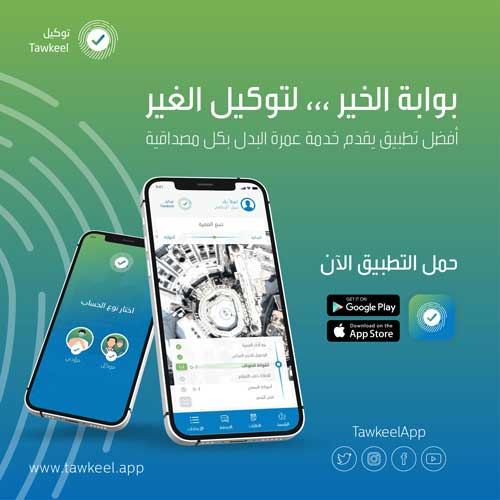

عمرة
البدل
عمرة
البدل هي حل شرعي يلجأ له المسلم كي يؤدي مناسك العمرة بالنيابة
عن الأب أو الأم أو أي شخص غير قادر على أن يؤدي العمرة سواء بسبب عجز أو
مرض،
وسواء كان الشخص حي أو ميت، وعلى من يقوم بتأدية المناسك بدلًا من الشخص
نفسه أن
يؤدي كل المناسك والأركان إلى جانب النية، فيجب أن ينوي المعتمر بدلًا من
الشخص
الآخر من أجل إتمام العمرة دون أي مشكلة.
عمرة البدل
من أجل تلبية حاجة العديد من المسلمين الذين من الصعب عليهم التوجه إلى مكة المكرمة من أجل أداء المناسك الخاصة بالعمرة بالنيابة عن أنفسهم أو عن أحد الوالدين أو الأقارب من المرضى أو العاجزين أو حتى المتوفين، قامت شركة توكيل بإطلاق تطبيق إلكتروني بمثابة وسيط رقمي من أجل تيسير الربط بين كل من يريد أداء العمرة والأشخاص المؤهلين من الناحية الشرعية من طلاب العلم وممن يحفظ كتاب الله، أو أي شاب مسلم مؤهل ليؤدي العمرة ممن يسكن في مكة المكرمة الذين سبق لهم من قبل أداء مناسك العمرة، ومستعدين بشكل كامل أن يقوموا بأدائها مرة أخرى عن الغير على سنة رسول الله (ص)، ويشرف على ذلك مشرفين من التطبيق وتوثق المناسك بالفيديو والصور ويتم منحها لطالب العمرة.

طريقة أداء عمرة البدل umrah
al badal
- لعمرة البدل
شروطها وأحكامها ولكن يمكن تأديتها في أي وقت ولا يوجد وقت معين لها، وعلى
كل من يرغب في أدائها بدل متوفي أن يقوم بكل مناسك العمرة ويؤدي كل
الأركان ويذكر الشخص المتوفى ويدعو بالرحمة له.
- يقوم
المعتمر بركن الإحرام، ويوجه النية لأن يعتمر لنفسه إذا كان لم يقم بذلك
من قبل أولًا، وإذا كان قد اعتمر قبل ذلك، فيقوم بتوجيه النية مباشرًة إلى
الاعتمار بالنيابة عن الشخص الآخر، ويمكنك أداء العمرة عن الشخص المطلوب
عمل العمرة عنه، وعن النفس في اليوم نفسه، أو يتم الفصل بين كل عمرة
والأخرى بعدة أيام.
حكم عمرة البدل عن الحي
يطرح
الكثير من الأشخاص سؤال هل يمكن أن تتم عمرة البدل عن شخص حي؟
ولكن العلم أن في حالة كون هذا الشخص مريض بمرض مزمن أو مرض يمنعه من
إتمام مناسك
العمرة، هنا يمكن أن يتم أداء العمرة بدلًا منه، وتلك هي الحالة التي يمكن
القيام
فيها بذلك الوحيدة.
شروط عمرة البدل بدلا من الحي والمتوفي
عمرة
البدل شبيهة بالعُمرة التقليدية في مناسكها وأركانها وخطْواتها،
ولكن يلزم توافر مجموعة شروط، حتى تعتبر العمرة صحيحة بدون وقوع مشكلات،
وعلى من
يريد أن يؤدي العمرة مكان شخص آخر أن ينفذ تلك الشروط بدون إهمال إحداها،
ومن تلك
الشروط:
- على من يرغب في
أن يؤدي عمرة مكان شخص آخر أن يكون قد اعتمر من قبل لنفسه، وإذا لم يكن
كذلك، فعليه أداء عمرة بنية لنفسه، ثم ينوي عمرة أخرى للشخص الآخر في
الرحلة ذاتها بدون أي مشكلة، أيًا كانت العمرة لشخص حي أو لشخص متوفى.
- إذا كان الشخص
الذي سوف تؤدي العمرة نيابًة عنه حي، فيجب أن يكون مريض بمرض مانع لأداء
العمرة، وأن يوافق على أداء العمرة عنه، وعدم موافقته يمنع الأمر.
- يمكن أداء العمرة
عن الأموات بدون الحصول على الموافقة، حتى إذا لم يتمنى خلال حياته أن
يقوم بالاعتمار، فيمكن الاعتمار بدلًا منه دون وقوع أي مشكلة.
- يمكن
أن يحصل المعتمر على أموال من أبناء المتوفى أو من أقاربه، بحيث تكون تلك
الأموال كافية للرحلة ومصروفات العمرة فقط، دون أن يحصل منهم على أي نقود
أكثر من ذلك للتنزه بها أو للمتاجرة بها.
تطبيق توكيل العمرة
- تطبيق توكيل
للعمرة البدل يعتبر تطبيق مميز تقوم بإدارته شركة مميزة ورائعة في توفير
الخدمات الخاصة بالعمرة البدل. توكيل عمرة البدل
- يعتبر من
التطبيقات العصرية المبينة على توفير عمرة البدل المجازة من الدين
الإسلامي، حتى يتمكن المسلم وخاصًة الذي لا يتمكن من أداء مناسك العمرة.
- يحل محل المعتمر
الأصلي يؤدي المناسك بدلًا منه ولا ينقص من أجر الشخص الأصلي أي شيء.
- التطبيق يوفر
خدمات التواصل بين أعداد ضخمة من الأشخاص في دول متعددة وبلغات كثيرة، حتى
يتم الوصول إلى شخص يريد أن يؤدي العمرة مكان شخص آخر أيًا كان من الأحياء
أو المتوفين من أجل تيسير المناسك والاتفاق بين الأشخاص عبر التطبيق.
- لهذا استفادت
شركة توكيل بتلك الإجازة الشرعية ووفرت تطبيق يمنح طالب الخدمة إمكانية أن
يختار المنسك، بل ويمكنك أن ييتبع خطوات أداء المناسك من وقت البدء مع
الوضع في الاعتبار ما جاء في السنة النبوية من طرق وشروط أدائها.
- وطورت
الشركة جزء مخصص لمن يؤدي عمرة البدل، بحيث يتمكن عبر التطبيق من أن
يستفيد من الذكاء الاصطناعي عن طريق توجيهه بخطوات أداء العمرة مثل ما جاء
في السنة النبوية.
خطوات استخدام تطبيق توكيل
يمكن استخدام التطبيق عن طريق ما يلي: تطبيق توكيل
- يقوم المعتمر أو
الحاج الذي قام بالتسجيل من قبل على التطبيق، ثم يسجل طلب بالقيام بالعمرة
مكان شخص آخر مسن لا يستطيع أداء العمرة أو الحد أو مكان شخص متوفى،
وينتظر حتى يقبل طلبه.
- يقوم من يرغب في
أن يؤدى عنه العمرة بالدخول على التطبيق بقبول طلب الشخص الأول ويتم
الاتفاق على كل التفاصيل.
- التطبيق يتيح
للطرفين أن يتشاركوا مناسك العمرة وذلك خطوة بخطوة.
- يتيح التطبيق أيضًا تسجيل كل الخطوات والمناسك ثم إرسالها لمن يريد الحج أو العمرة حتى يشعر بالاطمئنان. توكيل
- يمكن لمن يريد
أداء الحج أو العمرة عبر التطبيق أن يرسل للمعتمر عنه الأمنيات والأدعية
التي يريد منه ترديدها عند أداء المناسك.
- يمكن تحميل
التطبيق للأجهزة التي تعمل بنظام android من هنا، وإذا كان
الهاتف يعمل بنظام IOS، فيمكنك تنزيل التطبيق من هنا.
مدة تنفيذ خدمة عمرة البدل
- باقة العمرة في
رمضان، تنفذ خلال شهر رمضان، وترسل للمستخدم إشعارات بهذا عن طريق
التقارير الخاصة بأداء مناسك العمرة بالفيديو والصورة، ترسل له داخل صفحة
طلباتي بالتطبيق، ويمكن حجز عمرة رمضان في أي توقيت على مدار العام،
وتُجدول في الموعد المحدد.
- باقة العمرة في
الأيام الباقية تنفذ خلال مدة 14 يوم بحد أقصى من وقت تسلم الطلب، وترسل
للمستخدم إشعارات بهذا عن طريق التقارير الخاصة بأداء مناسك العمرة
بالفيديو والصورة، ترسل له داخل صفحة طلباتي بالتطبيق.